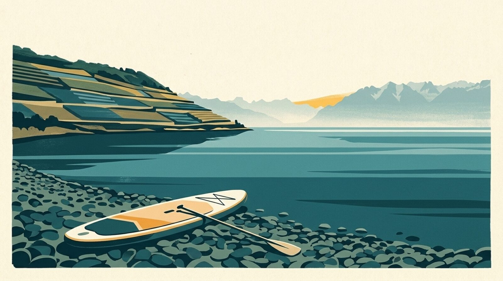

En bref
Pour le paddle, ce sont les rafales qui comptent. Dans Mon Lac, le paddle est « Parfait » jusqu’à 12 km/h de rafales, « Bien » jusqu’à 20 km/h, « Bof » jusqu’à 28 km/h et déconseillé au-delà ; la pluie ou un air sous 8 °C font perdre un cran. Par bise, mieux vaut rester près du bord ou attendre.

Quel vent maximum pour faire du paddle ?
Debout sur une planche, on offre beaucoup de prise au vent, et les vagues déstabilisent vite. Ce sont les repères de l’app (pas des normes officielles) :
- Parfait : rafales jusqu’à 12 km/h, le lac est un miroir.
- Bien : jusqu’à 20 km/h, quelques vaguelettes.
- Bof : jusqu’à 28 km/h, ça secoue.
- Non : au-delà, ou en cas d’orage.
La pluie ou un air sous 8 °C font perdre un cran. Le vent du jour, plage par plage, est dans l’app ; la bise mérite une attention particulière.
Où louer un paddle sur le Léman ?
- Tropical Corner, Cologny (de avril à octobre), près de Tropical Corner : École de windsurf depuis 1981 : location de planches et de paddles, ponton de wakeboard.
- SUP Club Nyon, Nyon, près de Nyon : Club de paddle au bord du lac, rue de Rive.
- Pedalino, Lausanne (de mai à septembre), près de Lausanne – Vidy : Centre nautique d’été au bout est de la grande plage de Vidy : paddles, pédalos, bateaux à moteur.
- Lutry’s Paddle School, Lutry, près de Lutry : Paddles et kayaks à louer en été sur la plage de Curtinaux, au cœur du village.
- SwissPaddle, Corseaux, près de Corseaux : Paddles et wing foil à Corseaux, à côté de Nestlé Vevey.
- Nautic Loisirs, Montreux, près de Montreux – Clarens : Quai des Fleurs : paddles, kayaks, planches à voile et bateaux à moteur.
- Evolution 2 Saint-Gingolph, Saint-Gingolph (de juin à septembre), près de Saint-Gingolph : Base nautique de la plage municipale : paddle solo ou tandem, kayak, e-surf, de juin à septembre selon la météo.
- Centre nautique d’Évian, Évian (de juillet à août), près de Évian : Base municipale de l’avenue du Général-Dupas : barques, pédalos et paddles, en juillet et août l’après-midi.
- Evolution 2 Thonon, Thonon, près de Thonon : Base nautique du quai de Ripaille, près de la plage de la Pinède : paddle, paddle géant, kayak, pédalo.
Prix, horaires et disponibilités changent : à vérifier auprès du loueur avant d’y aller.
Quelle plage choisir pour débuter ?
Une plage avec une entrée facile et un endroit abrité du vent du jour : la flèche de vent de chaque page de plage aide à choisir la rive la moins exposée.
L’eau du Léman en ce moment
La température de chaque plage est dans l’app Mon Lac, mise à jour toutes les trois heures.
Sources
- Open-Meteo
- Tropical Corner
- SUP Club Nyon
- Pedalino
- Lutry’s Paddle School
- SwissPaddle
- Nautic Loisirs
- Evolution 2 Saint-Gingolph
- Centre nautique d’Évian
- Evolution 2 Thonon
- La Base, Surf center VD8
- Base nautique Les Vikings
- Alphasurf
- Club Y-Plage
- meetmyboat
- Aventure Gruyère
- Camping du Lac
- Kayak Aventure
- Premier Alpine Centre
- Centre nautique du Domaine des Îles
- Wilson SUP Center
- Watersports.ch
- Tino Noleggio Barche